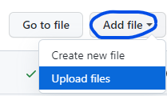

My personal GitHub page
1. Log in to GitHub, or create an account if you don't already have one.
2. Navigate to the green New button in the upper left as shown in the image below, or click here to create a repository.
3. Name your repository [your GitHub username].github.io and you can skip the checkboxes right now and add those files later if you wish. Now click the Create Repository button to begin.
4. Once you have created your repository, open Visual Studio Code on your PC, or download it from here if you don't already have it. Once open, you can add files to your new website.
5. Select a directory on your PC where you want to save your website files. Once selected, go to File > New File in Visual Studio Code. Name this index.html, and code your website!
6. Once you have finished for now, go back to the GitHub page that came up after you created your repository. Click on Add File then select Upload Files from the dropdown menu as shown below:
